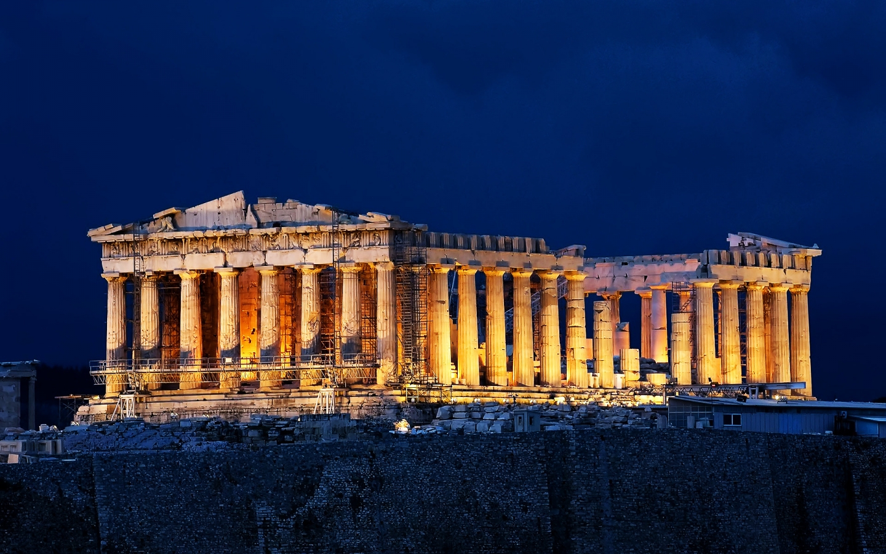
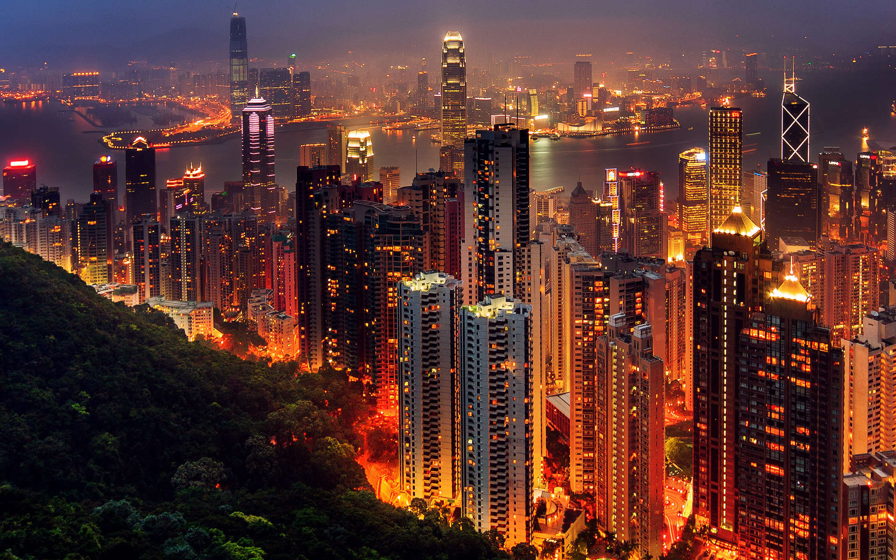
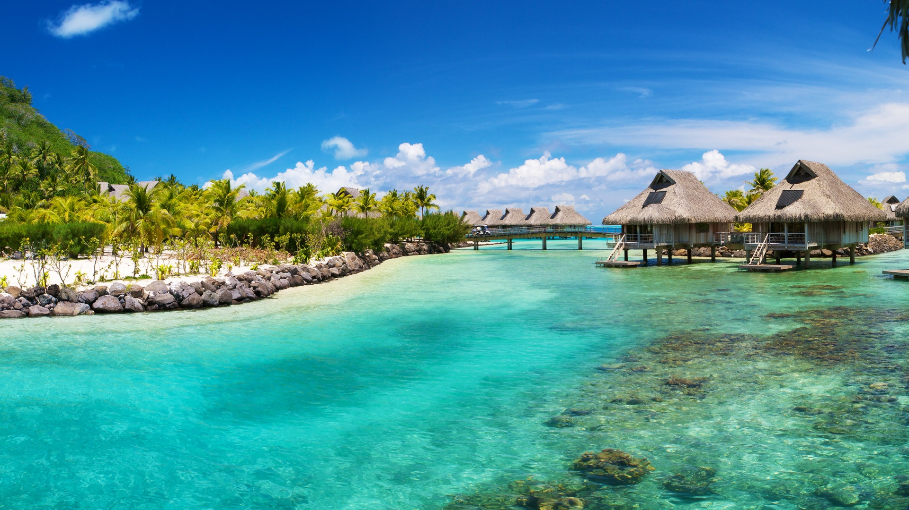
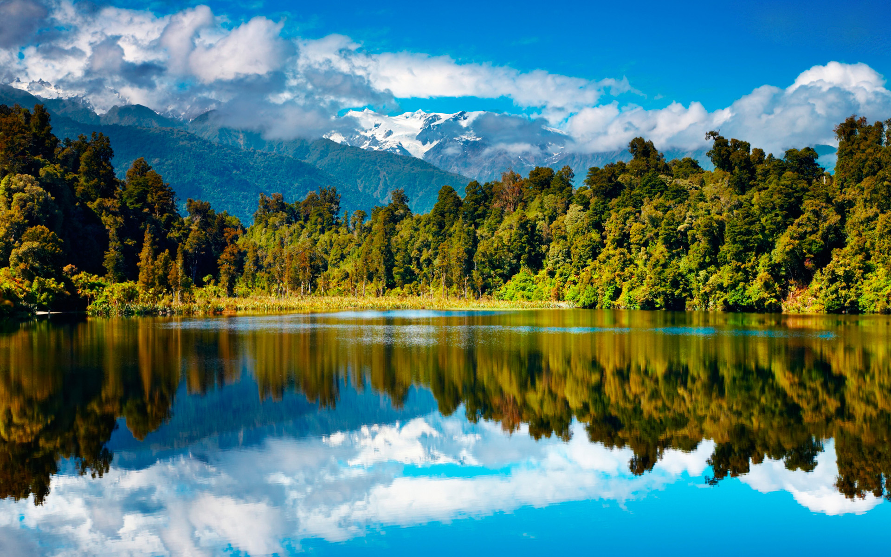
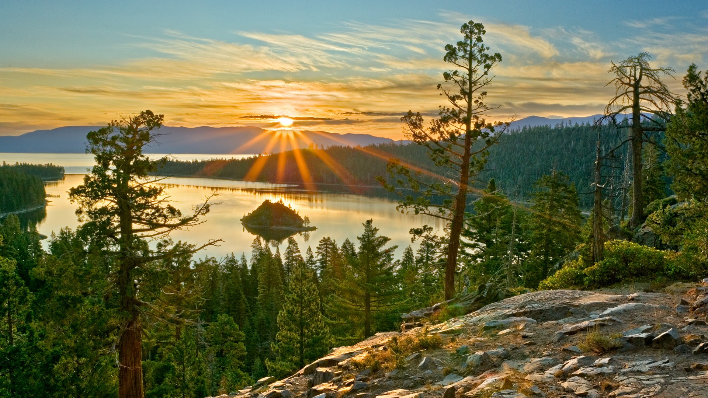
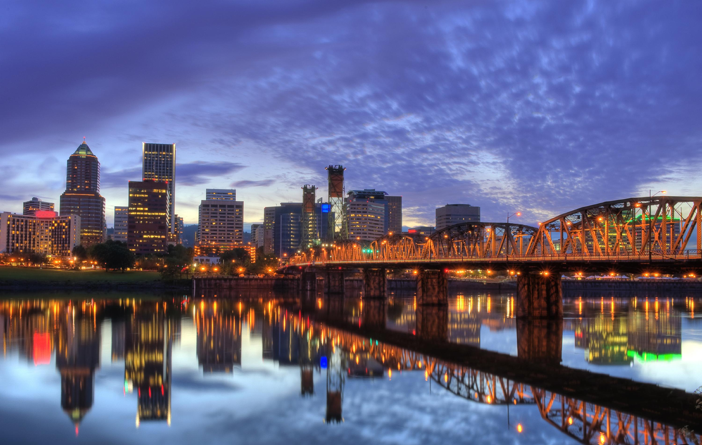
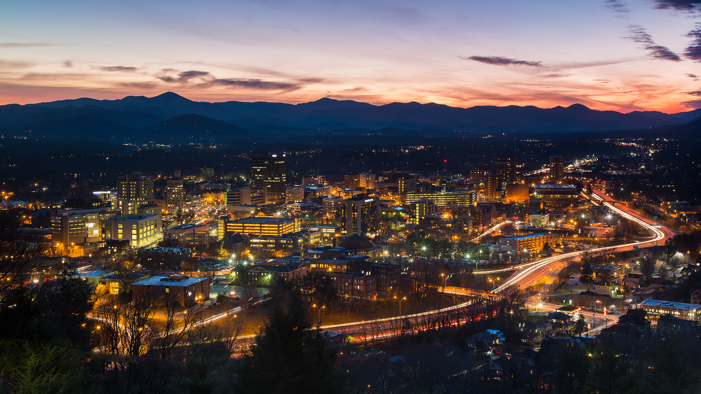
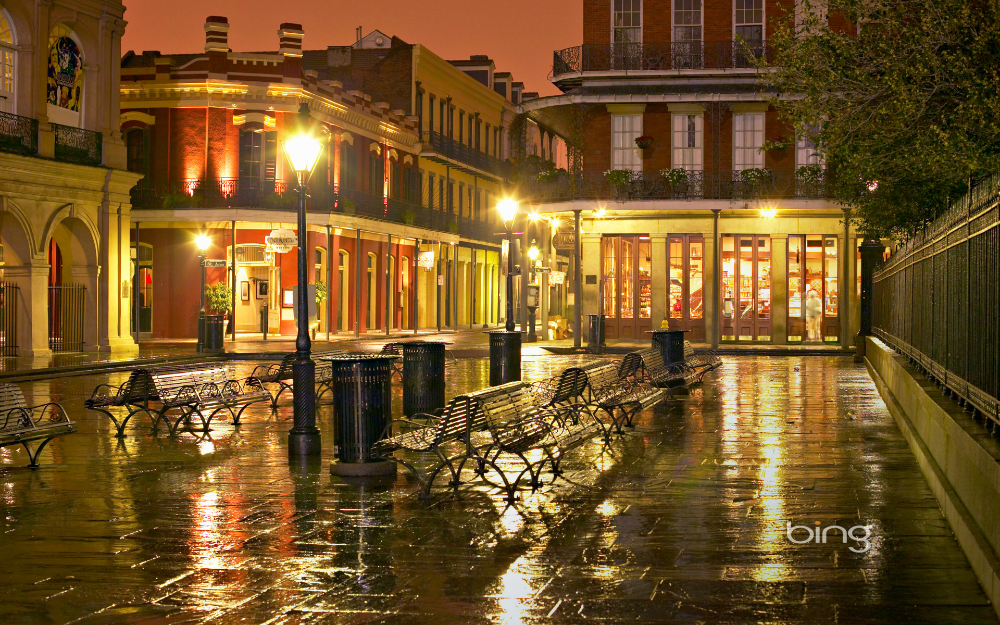

Athens, Greece
Meriting more than a stopover en route to the islands, sophisticated Athens sites include many pillars of Western history, from the Acropolis to the Temple of Olympian Zeus, as well as treasures in the National Archaeological Museum. Athens was voted as the third best European city to visit in 2015 by European Best Destination.
Hong Kong
Delectable dim sum, floating islands, and a one-of-a-kind skyline are just some of Hong Kong’s unique features. Get an eyeful of traditional Chinese architecture in Ngong Ping village, then take the tram to the tippity-top of Victoria Peak for unparalleled views. The rocks and gentle hills of Nan Lian Garden will bring you inner peace, as will a calming cup of tea in a Stanley café. Become one with everything at the Chi Lin Nunnery, a serene Buddhist complex.
Belize
Belize has large array of diverse tourists, adventure tourists and eco-tourist attractions. The Belize Barrier Reef (second largest in the world), over 450 offshore Cayes (islands), excellent fishing, safe waters for windsurfing, swimming, cave rafting, boating, paddle boarding, scuba diving, and snorkeling, numerous rivers for rafting, and kayaking, various jungle and wildlife reserves of fauna and flora, for hiking, bird watching, and helicopter touring, as well as many Maya ruins—support the thriving tourism and ecotourism industry. Of the hundreds of cave systems, Belize also holds the largest cave system in Central America, 544 species of birds, and well-preserved natural beauty. Despite all this, it is still among the least visited country in the region.
New Zealand
Every trip to New Zealand presents a mix of landscapes and cultures that's at once familiar to me, and yet quirkily different. The rolling hills and hedgerows collude with the irreverent, easy-going locals to disarm, distract and delight. Māori culture is potent, the surf is world class, and the craft beer is awesome. NZ presents the best of old and new worlds.
India

Travel through the lovely Indian states and discover closely the resplendent colors and rich cultural locales of this incredible land. India pulsates with a spectacular mix of people, traditions and landscapes. Your journey through this mind-stirring country will blaze in your memory long after you've left its shores. The hungry traveler can look forward to a tasty smorgasbord of regionally distinct creations, each with their own traditional preparation techniques and presentation styles – from the competing flavors of masterfully marinated meats and thalis to the simple splendor of vegetarian curries and deep-sea delights.
Tahoe, California
Basking in its 300 days of sunshine, Lake Tahoe is a haven for outdoor fun in every season. Swimming, kayaking and windsurfing are popular in the summer months, while epic snowfall makes for spectacular skiing in winter. For those who prefer indoor fun, there's plenty of that in Tahoe, too. With 24-hour casinos and a flashy nightlife scene, the area has a tangible Vegas vibe. A sprinkle of bling, if you will. Not surprising, since Lake Tahoe straddles the border between California and Nevada.
Portland, Oregon
Dynamic yet mellow, Oregon's largest metropolis boasts a vibrant downtown across the Willamette River from charming neighborhoods full of friendly – and often zany – people. It hums with a youthful vitality and is home to a landslide of liberal idealists, but it's located in a state where back roads brim with Republican red. Here Gore-Tex rain jackets in fine restaurants are as common as sideburns on a hipster. A haven for eco-activists, cyclists, grungesters, outdoor nuts, vegans, gardeners and dog-lovers, all supporting countless brewpubs, coffeehouses, knitting circles, lesbian potlucks and book clubs, Portland is a livable metropolis with pretty neighborhoods and a friendly, small-town atmosphere. It's an up-and-coming destination that has finally found itself but keeps redefining its ethos with every controversy (fluoride, anyone?). Racially progressive, culturally diverse and politically charged, the city is also – as many folks from out of state have discovered – an awesome spot to plant roots, settle in and chill out for while.
New York City, New York

Epicenter of the arts. Dining and shopping capital. Trendsetter. New York City wears many crowns, and spreads an irresistible feast for all. With its compact size and streets packed with eye-candy of all sorts – architectural treasures, Old World cafés, atmospheric booksellers and curio shops – NYC is an urban wanderer’s delight. Crossing continents is as easy as walking over a few avenues in this jumbled city of 200-plus nationalities. You can lose yourself in the crowds of Chinatown amid brightly painted Buddhist temples, steaming noodle shops and fragrant fishmongers, then stroll up to Nolita for enticing boutiques and coffee-tasting among the craft-minded scenesters. Every neighborhood offers a dramatically different version of New York City – from the 100-year-old Jewish delis of the Upper West Side to the meandering cobblestone lanes of Greenwich Village. And the best way to experience this city is to walk its streets.
Ashville, North Carolina
With its homegrown microbreweries, decadent chocolate shops and stylish New Southern eateries, Asheville is one of the trendiest small cities in the East. Glossy magazines swoon for the place. But don't be put off by all the flash. At heart, Asheville is still an overgrown mountain town, and it holds tight to its traditional roots. Just look around. There's a busker fiddling a high lonesome tune on Biltmore Ave. Over there, hikers chow down after climbing Mt Pisgah. Cars swoop on and off the Blue Ridge Pkwy, which swings around the city. A huge artist population and a visible contingent of hard-core hippies also keep things real.
New Orleans, Louisiana
The things that make life worth living – eating, drinking and the making of merriment – are the air that New Orleans breathes. New Orleans is all about beauty and experiencing the divine through mortal senses. There’s joy here, from great food to the best concert of your life, and serenity, found in the shade between live oaks or while watching fireflies on Bayou St John. Whichever way of being you choose for the day, New Orleans will indulge you. This city’s very facade is an architectural study par excellence. And while Boston and Charleston can boast beautiful buildings, New Orleans has a lived-in, cozy feeling that’s easily accessible.